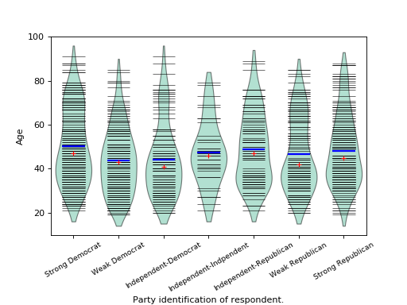

statsmodels.graphics.boxplots.beanplot¶
-
statsmodels.graphics.boxplots.beanplot(data, ax=None, labels=None, positions=None, side='both', jitter=False, plot_opts={})[source]¶ Make a bean plot of each dataset in the data sequence.
A bean plot is a combination of a violinplot (kernel density estimate of the probability density function per point) with a line-scatter plot of all individual data points.
- Parameters
- datasequence of ndarrays
Data arrays, one array per value in positions.
- axMatplotlib AxesSubplot instance, optional
If given, this subplot is used to plot in instead of a new figure being created.
- labelslist of str, optional
Tick labels for the horizontal axis. If not given, integers
1..len(data)are used.- positionsarray_like, optional
Position array, used as the horizontal axis of the plot. If not given, spacing of the violins will be equidistant.
- side{‘both’, ‘left’, ‘right’}, optional
How to plot the violin. Default is ‘both’. The ‘left’, ‘right’ options can be used to create asymmetric violin plots.
- jitterbool, optional
If True, jitter markers within violin instead of plotting regular lines around the center. This can be useful if the data is very dense.
- plot_optsdict, optional
A dictionary with plotting options. All the options for violinplot can be specified, they will simply be passed to violinplot. Options specific to beanplot are:
- ‘violin_width’float. Relative width of violins. Max available
space is 1, default is 0.8.
- ‘bean_color’, MPL color. Color of bean plot lines. Default is ‘k’.
Also used for jitter marker edge color if jitter is True.
- ‘bean_size’, scalar. Line length as a fraction of maximum length.
Default is 0.5.
‘bean_lw’, scalar. Linewidth, default is 0.5.
‘bean_show_mean’, bool. If True (default), show mean as a line.
- ‘bean_show_median’, bool. If True (default), show median as a
marker.
‘bean_mean_color’, MPL color. Color of mean line. Default is ‘b’.
‘bean_mean_lw’, scalar. Linewidth of mean line, default is 2.
- ‘bean_mean_size’, scalar. Line length as a fraction of maximum length.
Default is 0.5.
- ‘bean_median_color’, MPL color. Color of median marker. Default
is ‘r’.
‘bean_median_marker’, MPL marker. Marker type, default is ‘+’.
- ‘jitter_marker’, MPL marker. Marker type for
jitter=True. Default is ‘o’.
- ‘jitter_marker’, MPL marker. Marker type for
‘jitter_marker_size’, int. Marker size. Default is 4.
‘jitter_fc’, MPL color. Jitter marker face color. Default is None.
‘bean_legend_text’, str. If given, add a legend with given text.
- Returns
- figMatplotlib figure instance
If ax is None, the created figure. Otherwise the figure to which ax is connected.
See also
violinplotViolin plot, also used internally in beanplot.
matplotlib.pyplot.boxplotStandard boxplot.
References
P. Kampstra, “Beanplot: A Boxplot Alternative for Visual Comparison of Distributions”, J. Stat. Soft., Vol. 28, pp. 1-9, 2008.
Examples
We use the American National Election Survey 1996 dataset, which has Party Identification of respondents as independent variable and (among other data) age as dependent variable.
>>> data = sm.datasets.anes96.load_pandas() >>> party_ID = np.arange(7) >>> labels = ["Strong Democrat", "Weak Democrat", "Independent-Democrat", ... "Independent-Indpendent", "Independent-Republican", ... "Weak Republican", "Strong Republican"]
Group age by party ID, and create a violin plot with it:
>>> plt.rcParams['figure.subplot.bottom'] = 0.23 # keep labels visible >>> age = [data.exog['age'][data.endog == id] for id in party_ID] >>> fig = plt.figure() >>> ax = fig.add_subplot(111) >>> sm.graphics.beanplot(age, ax=ax, labels=labels, ... plot_opts={'cutoff_val':5, 'cutoff_type':'abs', ... 'label_fontsize':'small', ... 'label_rotation':30}) >>> ax.set_xlabel("Party identification of respondent.") >>> ax.set_ylabel("Age") >>> plt.show()
(Source code, png, hires.png, pdf)

{kind=link}
{kind=link}